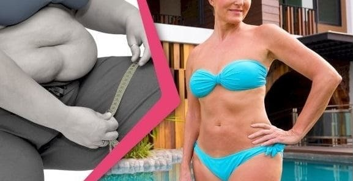

Tai
nutukimo pasaulyje pabaiga! Trys jaunieji mokslininkai-herojai NEMOKAMAI gelbsti žmoniją nuo
nutukimo
Šokiruojantis atvejis: Didžiosios farmacijos kompanijos prezidentas buvo nuteistas 600 000 eurų bauda už bandymą užkirsti kelią istoriniam atradimui kovoje su nutukimu.
Visas mokslo pasaulis nenustoja kalbėti apie jaunų genijų žygdarbį. Štai
talentingiausių studentų pasaulyje trijulė.
Jų likimą suvienijo mokslinės stipendija Europoje. Ten jaunieji mokslininkai suvienijo
jėgas, kad pasiektų istorinį proveržį kovoje už žmogaus sveikatą.
Diego José Gutiérrezas (18-metis argentinietis)
Jurgita Lankaitė (19-metė lietuvė)
Keiichirō Sanaka (19-metis japonas)
Jų išradimas visam laikui degina nereikalingus riebalus.
Svarbu: visiškai saugiai ir nekeičiant dietos bei gyvenimo būdo.
Šis metodas garantuoja svorio metimą po 10 kg per 2 savaites. – Mes tiesiog padarėme tai,
ką medicina galėjo ir privalėjo padaryti jau prieš 45 metus, – komentuoja jaunieji genijai.
Jų atradimo dėka jau 27 tūkstančiai Singapūro, Argentinos ir Japonijos piliečių numetė 10,
20, 40, 80 kg ir daugiau. Atėjo laikas Lietuvai!
Skaitykite toliau, kad sužinotumėte...
Kas yra jaunoji studentas,
kuri prisidėjo prie vaisto nuo nutukimo atradimo ir išgarsėjęs visame pasaulyje?
Kodėl didelės Amerikos farmacijos kompanijos prezidentas sumokėjo 600 000 eurų baudą?
Ir kokios sąlygos turi būti įvykdytos, norint pasinaudoti terapija ir
praktiškai nemokamai atsikratyti antsvorio!
– Žmonės, baikite šias
treniruotes ir dietas, – ragina jaunieji genijai
Viena šnypščianti šios naujoviškos terapijos tabletė, nors ir yra nedidelė, gali padėti
susidoroti net su 100 kg viršsvorio. Tai įrodymas, kad gamta yra neįtikėtinai
galinga!
Taip, gamta. Reikėtų aiškiai pabrėžti, kad terapija susideda tik iš augalinių ekstraktų.
– Norėdami numesti svorio, žmonės laikosi drakoniškų dietų ar kankina savo kūną mankšta.
Visa tai yra neveiksminga ir kenkia Jūsų sveikatai. Tikras priešnuodis prieš antsvorį
buvo ranka pasiekiamas ir slėpėsi augaluose.
Šie augalai ramiai augo Žemėje ir tiesiog laukė, kol juos kas nors pagaliau pastebės.
Tereikėjo juos sujungti ir leisti jiems veikti – sako jaunieji genijai.
Mūsų Jurgita tai mokslininkas nr. 1 pasaulyje!
Jurgita Lankaitė, kuriai esame skolingi už priešnuodžio prieš antsvorį
išradimą, kilusi iš Krekenavos – nedidelio Aukštaitijos miestelio. Ji gimė
kovo 14 d., t. y. tą pačią dieną, kaip ir pasaulinio garso mokslininkas bei
Nobelio premijos laureatas Albertas Einšteinas! Jau jos gimimo dieną tėvai
įtarė, kad ši mergina užkariaus mokslo pasaulį. Ir jie visai neklydo.
Jurgita, būdama 4 metų, įvaldė matematikos pagrindus. Būdama 12 metų ji gavo
vidurinės mokyklos diplomą. Pirmąsias studijas ji baigė būdama vos 15
metų. Ji kukli, tačiau jos protas aštrus kaip skustuvas.
Jos mokslo darbų rezultatai buvo panaudoti naujausiame zonde, kuris skris į
Marsą. Taip, tokius dalykus daro talentingi žmonės. Ir būtent čia,
Lietuvoje.
Didžiausia Jurgitos aistra visada buvo biologija ir dabar ji baigia doktorantūros studijas.
Mes paklausėme Jurgitos, kodėl ji ir jos kolegos, gavę medicinos stipendiją, nusprendė
išrasti būdą, nugalintį nutukimą.
„Mano močiutė mirė dėl
antsvorio“
– Mano močiutė dėl antsvorio susirgo cukriniu diabetu ir anksčiau laiko paliko šį pasaulį.
Diego neteko tėvo, kai jam buvo 7 metai. Priežastis? Antsvorio sukeltas širdies priepuolis!
Keiichirō atveju nutukimas yra paveldimas, todėl jo šeima kenčia nuo aukšto kraujospūdžio ir
pavojingai didelio cholesterolio kiekio. Faktas yra tas, kad antsvoris sutrumpina žmonių
gyvenimą vidutiniškai 12 metų...
Šiuolaikiniai metodai padeda susidoroti su daugeliu problemų, – tęsia Jurgita, – pavyzdžiui, su gripu, lėtiniu skausmu ir kitais nusiskundimais negalavimus,
o negali nieko padaryti su nutukimu? Tai beprotiška! Mes juk negyvename viduramžiais.
Šiandien mokslas turi neribotas galimybes.
Atėjo laikas rasti priemonę nuo nutukimo.
Kai pranešėme profesoriams, kokia bus mūsų tyrimo tema, jie ėmėsi už galvų. Jie perspėjo mus
apie farmacijos koncernus...
Farmacijos koncernams
apsimoka, kad žmonės būtų nutukę
Vaistus parduodančioms įmonėms apsimoka, kad žmonės turėtų antsvorio. Nutukimas sukelia
ligas.
Aterosklerozė, hipertenzija, diabetas – tai tik keletas iš šimtų ligų, kurias sukelia
antsvoris. Šias ligas reikia gydyti. Gydymui reikalingi vaistai.
Išradus veiksmingą vaistą nuo antsvorio, beveik neabejotinai bankrutuos farmacijos koncernai,
gaminantys vaistus nuo hipertenzijos, aterosklerozės, diabeto, cholesterolio, sąnarių
skausmų ir nuo daugybės kitų negalavimų...
O mums tai yra puikus kerštas už gobšumą, godumą ir aroganciją, – prisipažįsta pasipiktinusi
Jurgita. – Bet visų pirma tai yra didelis džiaugsmas, kad mūsų sunkus darbas bus naudingas
žmonijai ir išvaduos ją iš antsvorio košmaro.Leis atgauti sveikatą ir gyventi geriau ir
ilgiau!
Jie sunkiai dirbo ilgus
mėnesius
Po 17 mėnesių trukusių laboratorinių ir klinikinių tyrimų padarėme neįmanoma įmanomu! Mes
išradome augalinių ingredientų derinį, kuris vienu smūgiu sunaikina perteklinį svorį
visiems laikams.
Mums tiesiog reikėjo veiksmingumo ir saugumo įrodymų.
Išsiuntėme savo terapiją ir dokumentus bandymams į 7 tyrimų centrus Azijoje, Europoje ir
JAV. Mokslo pasaulis pradėjo apie mus kalbėti. Mūsų terapijos veiksmingumas buvo
neabejotinai patvirtintas.
Jau bandymų metu ji padėjo sėkmingai ir saugiai sulieknėti 9 tūkstančiams žmonių. Mūsų
telefonai nuolat skambėjo! Sulaukėme sveikinimų iš žinomų pasaulyje mokslininkų. Mes
džiaugėmės. Iki tol, kol...
Neįsitikinome, ką JIE
sugeba
Vis dar negaliu patikėti tuo, kas vyko toliau. Maniau, kad tokie dalykai vyksta tik
filmuose... Mes gavome pamoką ir sužinojome, ką sugeba pelno ištroškę verslininkai,
kuriems rūpi ne žmogaus sveikata ir gyvybė, o tik pinigai, – sako Jurgita su ašaromis
akyse.
Artėjo terapijos pristatymo diena ir per iškilmingą ceremoniją turėjome gauti patentą jos
gamybai. Likus 3 dienoms iki pristatymo, pasirodė Amerikos farmacijos koncerno
prezidentas George'as R.
Jis atvyko pas mus privačiu lėktuvu iš pačios Čikagos.
Jis pareikalavo susitikti. Mes nenorėjome susitikti su juo, tačiau jis nepriėmė atsisakymo.
Po kelių dešimčių atkaklių skambučių mes su juo susitikome.
Atsisėdome ant fotelių priešais prezidentą. Už mūsų stovėjo 5 apsaugininkai – Rytoj Jūs
niekur nesirodysite. Jūs sunaikinsite visus dokumentus, bandymų rezultatus ir savo
kompiuterius. Ir tada išnyksite.
– Niekada! Turbūt juokauji, žmogau! – Diego pašoko nuo kėdės įsiutęs, tarsi į jį įsikūnijo
demonas. Tada prezidentas savo asmens sargybiniams ramiai parodė gestą ranka, o aš su
Keiichirō...
Pajutome pistoletų
vamzdžius prie pakaušio
– Jei esi toks didvyris, tuoj pamatysi, kaip miršta tavo draugai, – pasakė prezidentas. Ir
pradėjo juoktis. Maniau, kad mirsiu iš baimės.
Pradėjau verkti.
– Sudie, vaikeliai! – sušuko prezidentas ir liepė mums nešdintis. Jis buvo tikras, kad jam
pavyko mus išgąsdinti. Ir jis buvo teisus...
Aš ir Keiichirō buvome šokiruoti. Nežinojome, ką daryti. Blaiviai mąstė tik Diego. Jis
neketino pasiduoti. Jis nuvedė mus į policiją.
Nenorėjau ten eiti. Kas galėtų patikėti, kad toks rimtas kostiumą vilkintis prezidentas
nukreipia pistoletą į tris „vaikelius“?
Mūsų pirmasis teismo
procesas
Šis vyras buvo tikras, kad gali mus sulaužyti. Jis elgėsi ramiai ir užtikrintai. Tarsi klausimas jau būtų išspręstas jo naudai. Man pasisekė, nes generalinis direktorius kartu su savo asmens sargybiniais jau buvo teismo salėje praėjus daugiau nei 3 valandoms po pranešimo apie nusikaltimą. Paprastai ieškiniai vyksta ne taip greitai.
Teisme prezidentas buvo ramus ir pasitikintis savimi.
– Lagamine turiu 100 tūkstančių dolerių. Paimkite juos ir pamirškime viską. Po valandos
turiu susitikimą su labai įtakingais žmonėmis, todėl neketinu čia gaišti laiko, – jis įžūliai kreipėsi
į teisėją.
Teisėją užplūdo pyktis.
Toks įžeidimas! Singapūro gyventojai yra labai garbingi, o korupcijos, kyšių ir
papirkinėjimo problemos jų šalyje praktiškai neegzistuoja. Ir tikrai ne tokiose rimtose
institucijose kaip teismas.
Teisėjas nieko daugiau nepaklausė. –Už studentų bauginimą, bandymą papirkti ir panieką
teismui Jums skiriama plakimo bausmė.
30 rykščių, – teismo salėje nuskambėjo teisėjo plaktukas.
Prezidentas negalėjo patikėti tuo, ką išgirdo. Niekada nepamiršiu to klouno veido. Šis žmogus
manė, kad jis yra pasaulio šeimininkas ir viską sutvarkys už pinigus. Jį ištiko toks sunkus
šokas, kad jis išblyško kaip kreida ir negalėjo ištarti nė žodžio. Jį tuoj pat sukaustė
grandinėmis ir nuvedė į kamerą.
Jei nebijai palaikyti teisingumo, tada viskas susitvarkys. Mes nepardavėme savo atradimo gobšiems žmonėms!
Policija dirba nepriekaištingai, o teismo procesai vyksta nedelsiant.
Europiečiams tai neįsivaizduojama, tačiau Singapūre dėl kai kurių
nusikaltimų, tokių kaip korupcija, taikoma viešo išplakimo bausmė!
Nuteistojo sėdmenys apnuoginami ir jis plakamas rykštėmis. Tokia bausmė moko
sąžiningumo veiksmingiau nei bauda ar areštas.
Godaus prezidento
išplakimas, plojimai jauniems genijams
– Vėliau buvo tik džiaugsmas, pasididžiavimas ir jausmas, kad įvykdėme savo užduotį. Ši
istorija su prezidentu primena filmą. Tačiau ji mus išmokė, kad Vakarų pasaulį valdo
pinigai.
Laimei, vis dar yra tokių šalių kaip mūsų, kur yra svarbus sąžiningumas ir garbė, –
prisimena Jurgita.
Įspūdingi lieknėjimo
efektai
Jaunų genijų išrasta lieknėjimo terapija jau pasinaudojo 27 tūkstančiai vyrų ir moterų nuo
18 iki 98 metų. Visi jie sėkmingai sulieknėjo iki tinkamo svorio. Nė vienas iš šių žmonių
nepatyrė šalutinio poveikio. – Mūsų terapija yra 100 % natūrali,
ji netrukdo jokiems vaistams ir nesukelia alergijos, – aiškina Jurgita.
Dokumentais pagrįsti terapijos efektai kalba patys už save. Naudodami ją, visi norintys
sulieknėti:
Padeda efektyviai numesti svorio.
Kursas trunka nuo 1 mėnesio, tačiau prireikus jį galima kartoti.
neturi kankintis dietomis ir treniruotėmis
– taikant terapiją išvis nereikėtų keisti mitybos įpročių ar daug sportuoti
sumažina rimtų ligų riziką:
aterosklerozės, diabeto, artrozės, taip pat širdies priepuolio, insulto
blokuoja „yo-yo“ efektą
kartą ir visiems laikams – taip yra dėl to, kad organizmas atstato riebalinę
atmintį ir nustoja kaupti kalorijas
padidina energijos lygį
ir raumenų jėgą 5 kartus – dėl to padidėja laimės hormonų gamyba, kurie
garantuoja gerą nuotaiką ir entuziazmą kiekvieną dieną!
IŠSAMIĄ INFORMACIJĄ APIE TERAPIJOS VEIKIMO BŪDĄ JAUNI MOKSLININKAI APRAŠO PUSLAPYJE, NUORODA Į
KURĮ PATEIKIAMA STRAIPSNIO PABAIGOJE
– Žmonės, kurie jau pasinaudojo terapija, rašo mums padėkos raštus. Kai kurie pasiekė
įspūdingų rezultatų ir numetė virš 100 kg antsvorio. Visi jie džiaugiasi gera sveikata
ir įgijo patrauklią išvaizdą. Jiems pavyko sukurti laimingus santykius, gauti paaukštinimą darbe. Jie grįžo prie senų
malonumų, kurių atsisakė gėdydamiesi antsvorio, pavyzdžiui, deginimosi paplūdimyje ar
lankymosi baseine...

Dabar KIEKVIENAS gali sulieknėti be menkiausių pastangų!
Moterys dažnai rašo, kad pagaliau gali gražiai rengtis ir niekas iš jų nesijuokia, nes yra
„storulės“. Labai liūdna, kad antsvoris yra socialinės atskirties priežastis. Taigi dar
labiau džiaugiamės, kad padedame žmonėms įgyti laimingą gyvenimą,
– didžiuodamasi sako Jurgita.
Kiekvienas europietis gali
numesti iki 10, 30, 50, 80 kg ir daugiau, net neišeidamas iš namų!
Terapija jau yra prieinama Lietuvoje. Susidomėjimas yra didžiulis, todėl internete masiškai
daugėja klastočių. Originalią terapiją su visiška veiksmingumo garantija galima gauti tik
toliau pateiktoje svetainėje. Be to, Jurgitos Lankaitės pastangų dėka...
Kiekvienas Lietuvos pilietis gali gauti terapiją su net 50 %
FINANSAVIMU!
Reikia pridurti, kad jaunieji mokslininkai atsisako savo maržos.
Neblogi vaikiai ir nebloga istorija... Na dabar tai tik lieknėti, sveikatos labui!
Nijolė Vainienė
Turėjau garbės mokyti Jurgitą, kai ji dar mokėsi pradinėje mokykloje. Auksinis,
nepaprastai gabus vaikas, o be to, labai geras. Visada džiaugiausi už ją ir buvau tikra,
kad ji daug pasieks. Net ašaros sukasi akyse!
Jonas Krivickas
ponios ir ponai. Pasisakysiu nes kankinausi su antsvoriu 7 metus. Žinoma vyrui norisi
išgerti alaus ir suvagyti celpelinus. Žmona tručijo kasdien, kad liuačiausi nes aukštas
chlesterolis, būti storam yra nesveika. Mano krikšto dukra iš delegacijos Japonijoje
atsiuntė man šią terapiją, todėl išbandžiau dėl šventos ramybės. Bet visai nekeičiau
įpročių. Ir numečiau 20 kg per nepilną mėnesį, pagaliau mano tyrimų rezultatai yra
normoje. Esu ir sveikesnis ir žmona nezyzia.
Renata
Na gerai, bet kaip gali liekninti kažkoks preparatas, susidedantis iš natūralių
ingredientų? Jei viskas būtų taip paprasta, argi mokslininkai nebūtų to supratę
anksčiau?
Marius
@Renata
jei viskas medicinos pasaulyje būtų taip lengva, dabar neturėtume jokių ligų ir
gyventume po 200 metų. Kabiniesi prie smulkmenų, o tai istorinis medicinos proveržis!
Mariolė Bublevič
Isbandziau daugybe kvailu liekninanciu papildu, bet aisku jie man nieko nedave o tik
ismeciau pinigus. Bet čia, tiesą sakant, tai pirmasis metodas, kuris man padėjo. Naudoju
tik savaite, bet jauciu, kad drabuziai jau yra daug laisvesni ir lengvai uzsimaunu
kelnes, kuriu pries savaite dar negalejau uztraukti iki keliu. jauciuosi tokia lengva.
Ir visiškai nežiūriu kad turiu atsisakyti to ar ano. tiesiog NUOSTABU mielieji!
Beata Daubarienė
O aš nieko nerašysiu, tegul mano nuotraukos kalba pačios už save.Ponios ir ponai, tai yra
mano nuotraukos prieš ir po 3 savaičių šios nuostabios terapijos:
Marta M.
Ponia Beato, neįtikėtinas efektas :) Leiskite tik pridurti, kad ir anksčiau atrodėte
gražiai. Bet žinoma, lieknėjimas ne tik dėl grožio, bet visų pirma dėl sveikatos, kurios
Jums linkiu. Ačiū už šias nuotraukas, jos mane įtikino, kad šis metodas man taip pat
padės :)
Gabrielė
jau buvau šioje svetainėje, laukiu savo siuntinio, su finansavimu jų lieka vis mažiau,
todėl geriau paskubėkite:)
Deimantė Jurkutė
valio! išbandžiau ir sulieknėjau 18 kg nepaisant genetinio polinkio į antsvorį. Tai yra
taip paprasta ir efektyvu, kad net perpurto pagalvojus, kad tik dabar galima normaliai
sulieknėti be badavimų. Bet geriau vėlai nei niekada :) P-U-I-K-U aš labai labai
rekomenduoju! be sito kilogramu pertekliaus, naujas gyvenimas!
Ignas
o kiek laiko tai reikia gerti ir ar kiekvienam amziuje tai pat padeda?
Birutė Oželienė
@Ignas
aukščiau straipsnyje aprašyta, priklauso nuo to, kiek svorio nori numesti, 10 kg per 2
savaites, 20 kg per 4 savaites ir pan :) ten šiame puslapyje kuris pateiktas straipsnyje
yra tyrimų rezultatai, pasižiūrėk :)
Viole
Jau buvau šiame puslapyje ir užpildžiau formą, dar gavau finansavimą! :))) Laukiu
pristatymo ir jau netrukus pradėsiu lieknėti


Julius
Neblogi vaikiai ir nebloga istorija... Na dabar tai tik lieknėti, sveikatos labui!